AEROSPACE SYSTEMS · FLIGHT CONTROL · AUTONOMY · ADVANCED AIR MOBILITY
장광우 Kwangwoo Jang, Ph.D.
Research Engineer · 한국전자통신연구원 (ETRI)
비행제어에서 UAM 시스템 통합까지이론과 실증을 연결하는 항공시스템 연구자
항공우주공학을 기반으로 비행체 동역학 및 제어, 자율비행, UAM 시스템 을 연구해 왔습니다.적응·강건제어, AI 기반 자율비행, MPPI 기반 최적유도 등 불확실한 비행환경에 대응하는 알고리즘을 개발하고, 온보드 컴퓨터에 구현하여 HILS와 실제 비행시험 으로 검증해 왔습니다.Hoverbike 개발 을 통해 비행체 하드웨어, 비행제어 소프트웨어, 자율비행 기능을 통합하고 대규모 연구개발을 총괄하는 시스템 수준의 경험 도 축적했습니다.
Aircraft & UAM 비행체 · UAV · eVTOL
GNC & Autonomy 제어 · 유도 · 자율비행
System Integration HW/SW · 온보드 · 비행시험
FOUNDATION Aircraft Dynamics & Control 비행체 동역학 · 비선형/적응제어
→
GUIDANCE & AUTONOMY Autonomous Flight 최적유도 · 인지 · 충돌회피
→
SYSTEM EXPERIENCE UAM System Integration HW/SW · 온보드 · 비행시험
→
ONGOING Intelligent Aerospace Systems GNC · AI · System Intelligence
01 Flight Dynamics & Control 비선형 · 강건 · 적응 비행제어
02 Guidance & Autonomous Flight 최적유도 · MPPI · 인지 · 충돌회피
03 Aircraft System Integration Onboard SW · Avionics · HILS · Flight Test
04 Advanced Air Mobility UAV · eVTOL · UAM · Cooperative Systems
EXPERIENCE & EDUCATION
연구경력 및 학력
2025–Present 한국전자통신연구원 (ETRI) Research Engineer · Air Mobility Research Division
UAV/UAM 지능형 비행시스템과 온보드 AI 기반 자율비행 기술 연구
2020–2025 KAIST 항공우주공학 박사 Sampling-Based Motion Planning for Multirotor UAVs
MPPI 기반 지형추종·3차원 충돌회피, pilot model 추정 및 GPU 실시간화·HILS 검증
2018–2020 KAIST 항공우주공학 석사 Quad-Tiltrotor Transition Flight Control
틸트형 VTOL 기체 설계, 비선형 시뮬레이터 구축 및 NDI–MRAC/RBF-NN 적응제어의 온보드 HILS 검증
2013–2018 KAIST 항공우주공학 학사 B.S. in Aerospace Engineering
비행역학·자동제어·공기역학·추진 및 항공우주시스템 기초 확립
FEATURED PUBLICATIONS
대표 논문
FIRST AUTHOR JGCD 2026 HILS
Real-Time Terrain-Following Guidance for Mitigation of Pilot-Induced Oscillations
Kwangwoo Jang , Youngjae Kim, Sukjae Im, Man Jun Koh, Hyochoong Bang
MPPI와 PIPE를 결합해 조종사 특성을 온라인 추정하고 지형추종 과정의 pilot-induced oscillation을 실시간으로 완화.
KEY RESULT GPU 병렬 연산 · HILS 검증 · 진동 크기 36.8% 감소
doi.org/10.2514/1.G009574
FIRST AUTHOR JGCD 2024 FLIGHT TEST
Mitigating Time-Delay in Nonlinear Dynamics Inversion for Multirotor Unmanned Aerial Vehicles
Kwangwoo Jang , Hyochoong Bang, Yoonsoo Kim
Actuator time delay로 인한 NDI 제어기의 불안정성을 분석하고 시간지연 여유를 높이는 제어 구조를 제안.
KEY RESULT 해석 · 시뮬레이션 · 실제 멀티로터 비행시험 검증
doi.org/10.2514/1.G007567
ADDITIONAL JOURNAL ARTICLES
2026 · SCIENTIFIC REPORTS · CO-AUTHOR
HashEye: a real-time on-drone high-resolution tiny object detection via spatial pruning Hyeonji Hong, Nakyeong Lee, Kwangwoo Jang , Gague Kim, Yangjae Jeong, et al.
4K 항공영상의 배경 패치를 제거·재배열해 온보드 tiny object detection을 최대 5.25× 가속.
Paper ↗
2025 · PROC. IMECHE PART G · CO-AUTHOR
Feedback linearization-based model reference adaptive control for multirotor UAVs under uncertainties from fuel and payload Jayden Dongwoo Lee, Lamsu Kim, Kwangwoo Jang , Seongheon Lee, Hyochoong Bang
비선형 동역학은 FL로 보상하고 MRAC 적응 입력으로 모델 불확실성을 추정해, 연료 소모와 편심 페이로드 환경에서도 자세·고도 추종성을 확보.
Paper ↗
2023 모델 예측 경로 적분 기법 기반 항공기의 지형 추종을 위한 연산 유도 명령 생성 알고리즘 장광우 , 홍경우, 방효충, 이상일, 전지연, 송기훈 · 한국항공우주학회지, 51(11), 769–777
Paper ↗ 2022 Design for a Dual-Redundant Flight Control Computer Using a Model Predictive Voting Algorithm Dongwoo Lee, Kwangwoo Jang , Hohyeong Lee, Hyochoong Bang · RiTA 2021, LNNS 429, 3–11
Paper ↗
Full publication list · Google Scholar ↗
AWARDS & PROFESSIONAL ACTIVITIES
수상 및 위원회 활동
2023.12 국방과학연구소 공로상 고신뢰성 다목적 호버바이크 연구개발 및 시제기 통합·실증 기여
2026 우주항공청 기술분과위원회 위원 미래항공기 개발 및 제조 AI 안전성·신뢰성 기술개발 사업 설계분과
SELECTED SYSTEM PROJECT
고신뢰성 다목적 호버바이크 개발
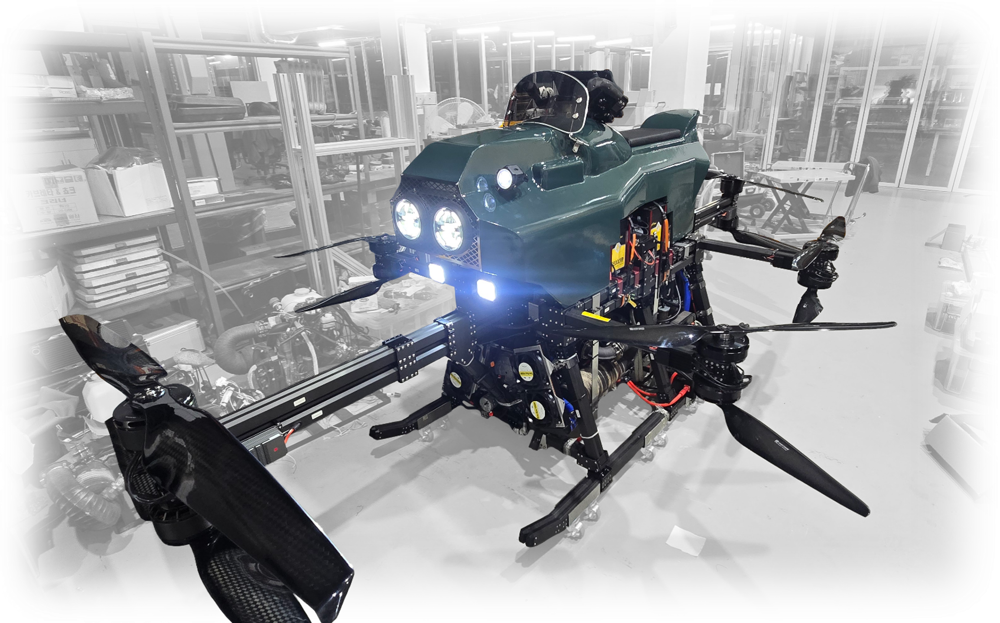
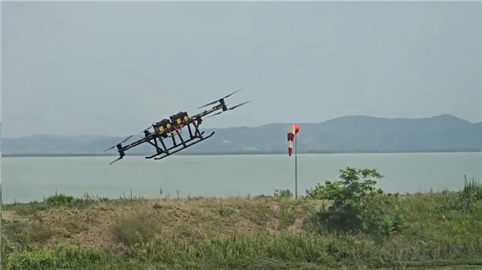
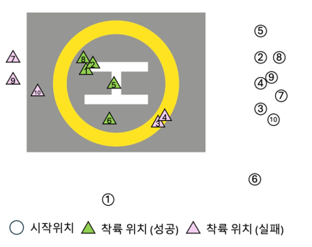
2019–2024 · 국방과학연구소 (ADD)
Project POC · System Integration · Flight Test
하이브리드 엔진·배터리 복합추진 기반 유·무인 비행 플랫폼 개발에서 8개 연구실의 협업과 시제기 시스템 통합을 총괄했습니다.
시제기 설계·제작·납품과 통합 지상·비행시험 총괄
3중화 비행제어 컴퓨터, 다중센서 융합·무결성 감시 및 고장대응 통합
장애물 회피, GPS-denied 항법 및 영상 기반 정밀 자동착륙 실증
100 kg Payload
60 min Endurance
30 km Range
CEP 1.0 m Auto-Landing
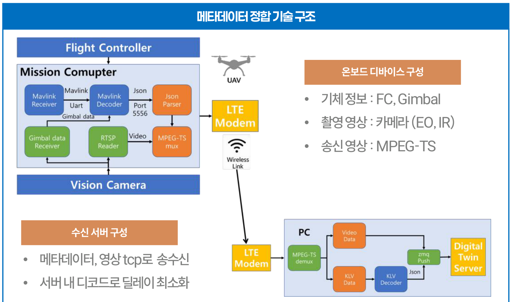
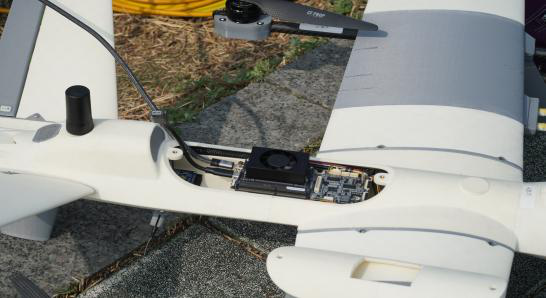
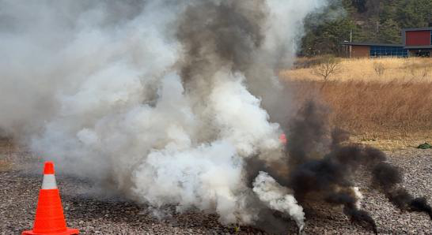
2026–현재 · 산림청·한국임업진흥원 · ETRI 컨소시엄
대형산불 대응 군집드론 기술개발 온보드 실시간 메타데이터 정합, 산불탐지 AI 경량화, 자동착륙, 군집드론 대형유지 기술을 개발.
FC·짐벌·카메라 온보드 통합 및 메타데이터 정의, Jetson Orin 기반 실시간 영상·메타데이터 LTE 송수신 검증
생성형 AI 기반 학습데이터 증강으로 산불탐지 모델 개발 및 추론 경량화(YOLOv8 대비 2.05배 가속)
지형 위험도 기반 안전 착륙구역 학습 및 자동착륙 알고리즘 개발 (PX4/Gazebo 검증 시나리오 25/25 착륙 성공)
군집드론 간 상대거리 기반 대형유지 기술 개발
Edge AI eVTOL Swarm Auto-Landing
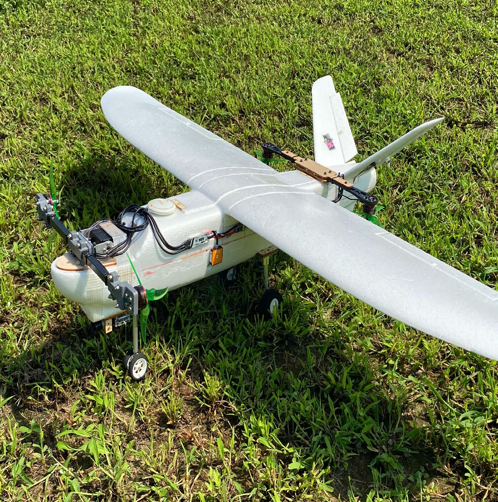
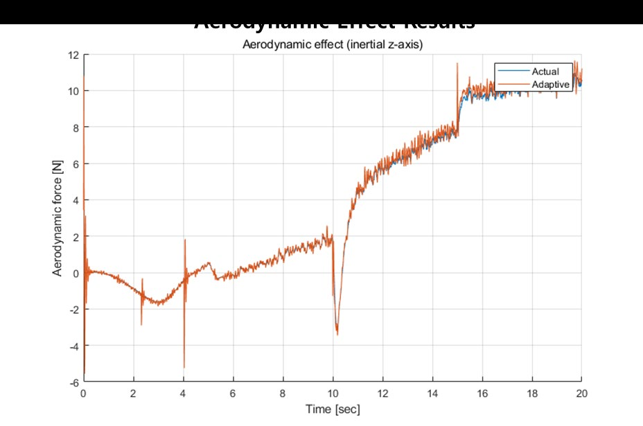
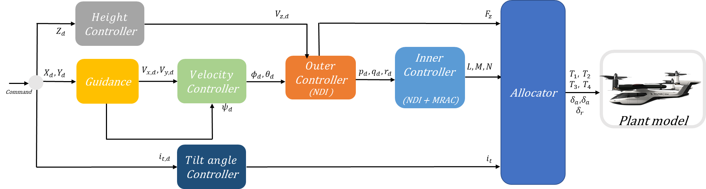
2020–2021 · HTK 컨소시엄 · AIRCRAFT DESIGN & FLIGHT CONTROL
틸트형 수직이착륙 비행체 설계 및 적응제어
기체 형상과 추진·제어 구성을 직접 설계하고, 호버–천이–전진비행을 재현하는 비선형 시뮬레이터부터 적응제어 및 HILS 검증환경까지 일관된 개발 체계를 구축.
01 기체 설계→ 02 시뮬레이터→ 03 적응제어→ 04 HILS
로터 틸트 구조와 비행체 형상, 추진 및 제어시스템 구성 설계
틸트각 변화와 천이비행 공력효과를 반영한 비선형 동역학 시뮬레이터 구축
NDI–MRAC 제어구조와 RBF-NN 보상기를 설계하고 실제 온보드 비행제어 컴퓨터 기반 HILS로 검증
Aircraft Design Nonlinear Simulation RBF-NN / MRAC Onboard HILS
PART II 연구계획서 RESEARCH PLAN
RESEARCH VISION @ AJOU UNIVERSITY
Safe and Intelligent Flight Systemsfor Advanced Air Mobility
불확실한 실제 환경에서도 안전하게 비행하고, 이를 실제 항공시스템에서 검증하는 지능형 항공모빌리티 기술
REAL-WORLD AIR MOBILITY
Wind · Disturbance · Model Uncertainty · Terrain · Obstacles
↓
SAFE & INTELLIGENT FLIGHT SYSTEMS
01 Robust &
실제 비행환경의 외란과 모델 불확실성을 온라인으로 추정하여 제어와 최적유도에 반영
PIPE · Adaptive / Robust Control
02 Safety-Aware
안전한 nominal guidance를 생성하고 HJ reachability 기반 safety layer로 위험상황에 대응
TAFM · MPPI · HJ Reachability
03 Integrated
인지·항법·GNC·온보드 AI를 UAV/eVTOL에 통합하여 HILS와 비행시험으로 검증
Onboard AI · Avionics
↓
Simulation → HILS → Flight Test
↓
UAV · eVTOL · UAM
RESEARCH PHILOSOPHY · 연구 철학
실제 항공·UAM 시스템의 안전성은 우수한 단일 알고리즘만으로 확보되지 않습니다.
실제 비행환경에는 외란과 모델 불확실성, 복잡한 지형과 장애물이 동시에 존재하며, 이를 극복하려면 인지–유도–제어–비행체 시스템이 하나의 폐루프로 동작해야 합니다. 저는 실환경의 불확실성을 이해하고(Understand), 위험을 고려하여 안전하게 계획하며(Plan), 이를 실제 항공시스템에서 검증하는(Validate) 연구 를 지향합니다. 이를 통해 이론–알고리즘–온보드 구현–HILS–비행시험을 연결하는 Safe and Intelligent Flight Systems 를 구축하고자 합니다.
UNDERSTAND UNCERTAINTY → PLAN SAFELY → VALIDATE IN REAL FLIGHT
DETAILED RESEARCH PLAN
세 가지 핵심 연구축
비행체의 불확실성 , 비행환경의 위험 , 그리고 시스템 통합 이라는 실제 항공·UAM의 세 가지 핵심 문제를 해결합니다.
RESEARCH OBJECTIVE 돌풍·공력 및 탑재조건 변화로 발생하는 미지 동역학과 외란을 비행 중 온라인으로 추정하고, 그 불확실성을 제어와 유도에 실시간 반영합니다.
METHOD & EXPANSION PIPE 기반 추정값과 추정 불확실성을 함께 정량화하도록 확장하고, 이를 adaptive/robust control 및 MPPI의 비용함수·제약조건과 결합하여 환경변화에 적응하는 GNC framework로 발전시킵니다.
RESEARCH APPROACH PIPE-Based ↓ Uncertainty Quantification ↓ Adaptive / Robust GNC ↓ Uncertainty-Aware MPPI
Online estimation of unknown dynamics
RESEARCH OBJECTIVE 복잡지형과 장애물을 지속적으로 인지하면서 안전한 경로와 착륙 가능 영역을 판단하고, perception error와 학습 분포 밖의 환경에서도 안전성을 유지합니다.
METHOD & EXPANSION TAFM·MPPI가 생성한 nominal guidance에 HJ value function과 safety shield를 결합합니다. 향후 perception uncertainty와 동적 장애물까지 포함한 안전 자율비행으로 발전시킵니다.
RESEARCH APPROACH Learning for Performance TAFM / MPPI+ Model-Based Safety HJ Reachability
↓ SAFE COMMAND 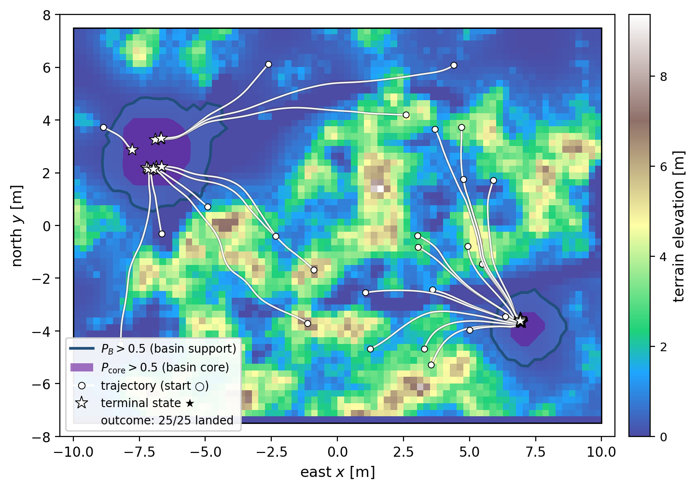
Learning-based guidance + HJ safety assurance
RESEARCH OBJECTIVE 센서·항법, 비행컴퓨터, 온보드 AI, 통신, 추진 및 기체 하드웨어를 실시간으로 연동하여 알고리즘을 시스템 수준에서 검증합니다.
METHOD & EXPANSION Hoverbike 통합 경험을 바탕으로 SILS–HILS–비행시험에 동일한 SW와 항전구조를 사용하는 modular UAV/eVTOL 플랫폼을 구축하고 협력비행으로 확장합니다.
INTEGRATION PROCESS Sensors / Navigation + Flight Computer / AI + GNC / Autonomy ↓ HILS → Flight Test
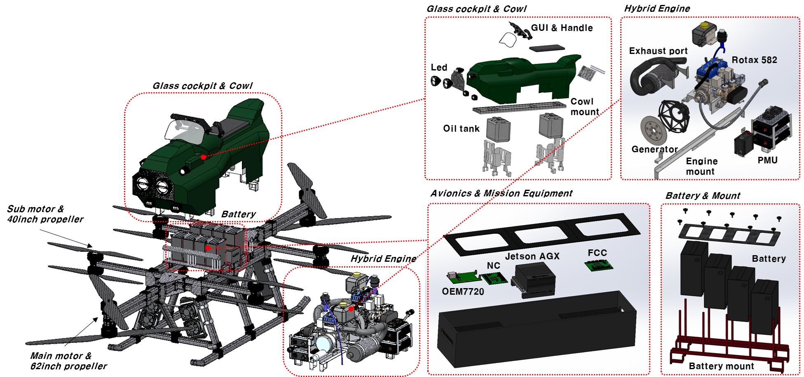
UAM-scale Hoverbike system integration
5-YEAR EXECUTION PLAN
연구역량의 단계적 확장
핵심기술 확보에서 실환경 비행실증, 통합 항공모빌리티 연구거점 구축까지 단계적으로 성장합니다.
CORE TECHNOLOGY → FLIGHT DEMONSTRATION → AIR MOBILITY INTEGRATION
발전 전략 개별 알고리즘을 재사용 가능한 연구플랫폼으로 통합하고, 실내·HILS 검증에서 실외 비행실증으로 확장한 뒤 협력형 항공모빌리티 운용기술로 발전시킵니다.
YEAR 1–2
Foundation 기존 PIPE·TAFM·HJ 연구성과를 공통 SW/HW 구조로 재구성하고 반복 가능한 검증환경을 확립합니다.
CORE TASKS PIPE 기반 uncertainty estimation–adaptive GNC 통합 · TAFM–HJ safety layer 구축 · Modular UAV와 HILS 기반 초기 비행검증
MILESTONE Reusable Safe-Autonomy Research Platform
→
YEAR 3–4
Real-World Expansion Vision·depth 기반 인지를 폐루프에 포함하고, 복잡지형과 외란이 존재하는 실외 환경으로 실증범위를 넓힙니다.
CORE TASKS Perception-in-the-loop autonomy · 지형추종·장애물회피·안전착륙 통합 · 실외 장시간 비행 및 산학연 공동실증
MILESTONE Real-World Autonomous Flight Demonstration
→
YEAR 5+
Air Mobility Integration 검증된 인지·유도·제어 모듈을 eVTOL과 다중 비행체로 확장하여 협력형 운용기술을 선도합니다.
CORE TASKS Integrated UAV/eVTOL platform · Multi-UAV cooperative autonomy · AI 기반 임무할당과 군집운용
MILESTONE Leading Safe & Intelligent Air Mobility Research Group
AJOU SYNERGY 아주대의 융합역량을 실제 항공·UAM 시스템으로 연결합니다.
AJOU MOBILITY STRENGTHS AI · Robotics · Embedded Systems · Localization · Communications+
MY CONTRIBUTION Aerospace Dynamics · GNC · UAV/UAM System Integration→
Safe & Intelligent
SAFE & INTELLIGENT FLIGHT SYSTEMS LABORATORY 이론적 안전성과 실환경 비행실증을 연결하는